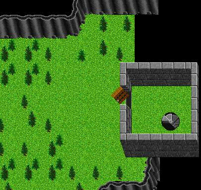
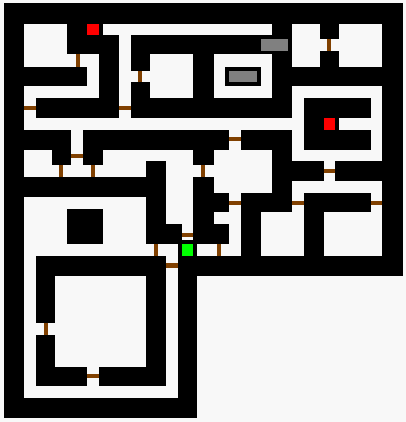

|  |
| Maeling Dungeon: Stairs Down |
|
Thanks to Seville's Page East and a little South is the entrance to the Maeling dungeons.
|
|  |
| Maeling Dungeon: -1 |
|
Thanks to Seville's Page for the map and Edge guild for some additional comments. Green hex is the stairs to the surface. Red hexes take you down to M-2. Fungus bread can be found here occasionally. |